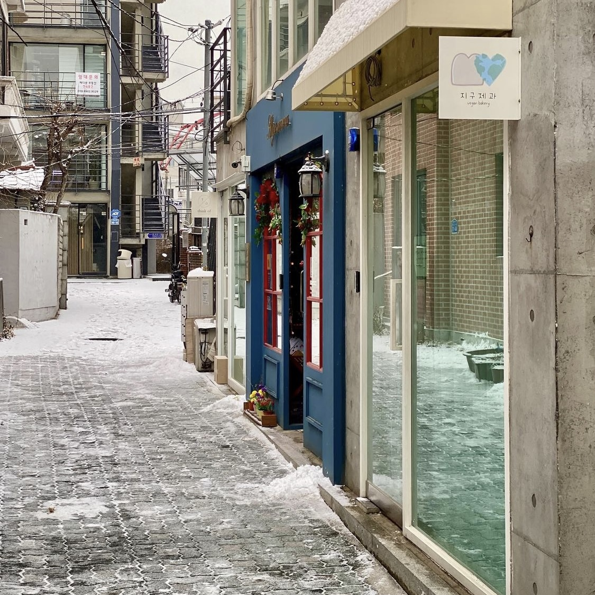
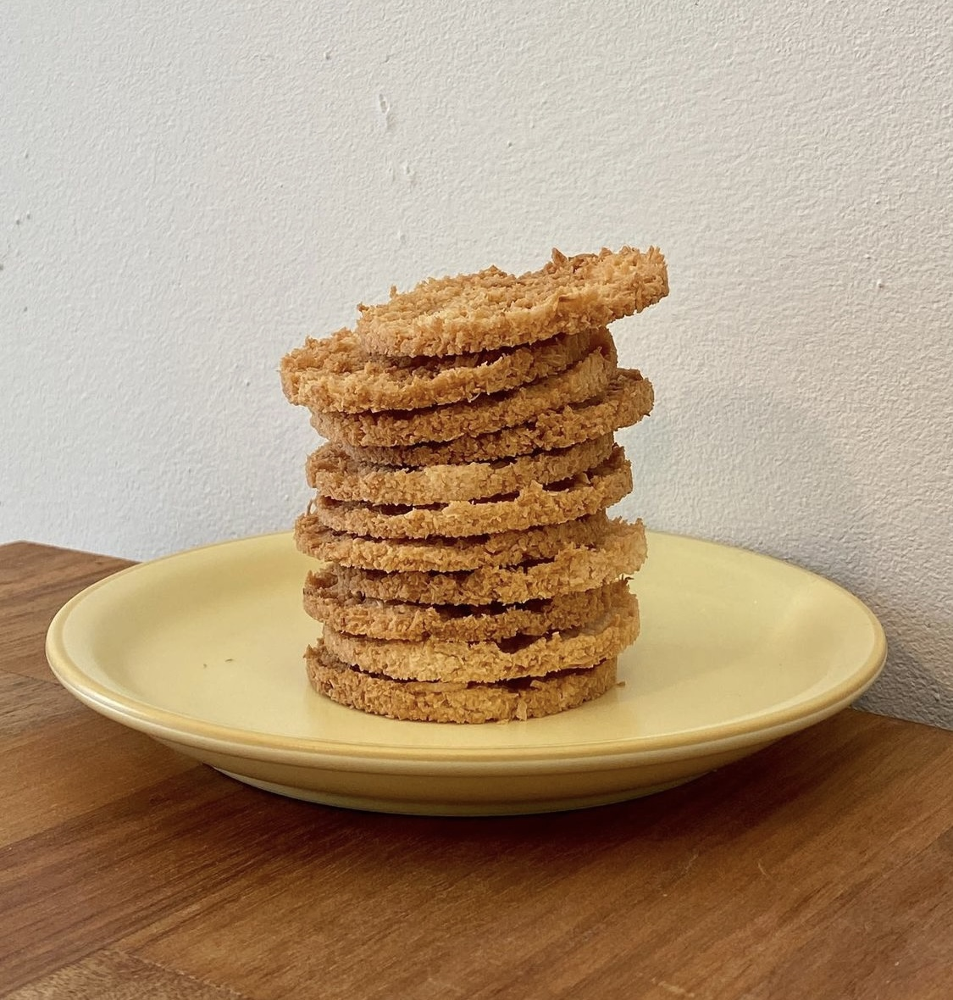
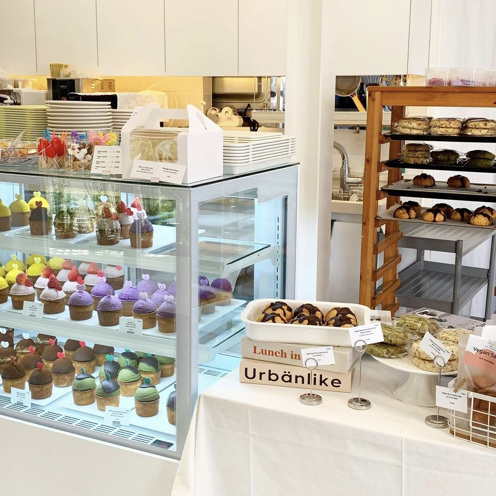
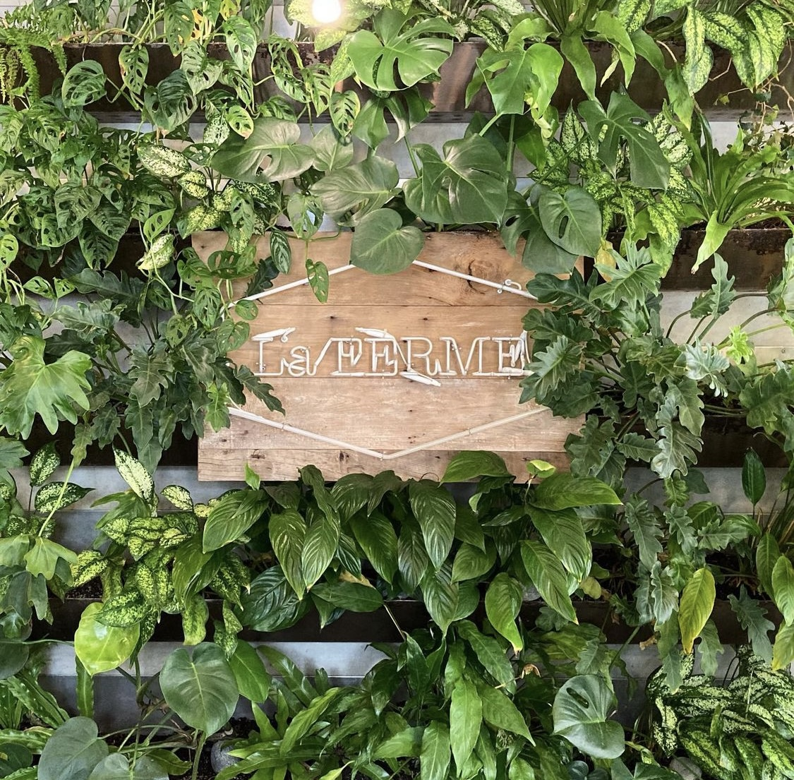
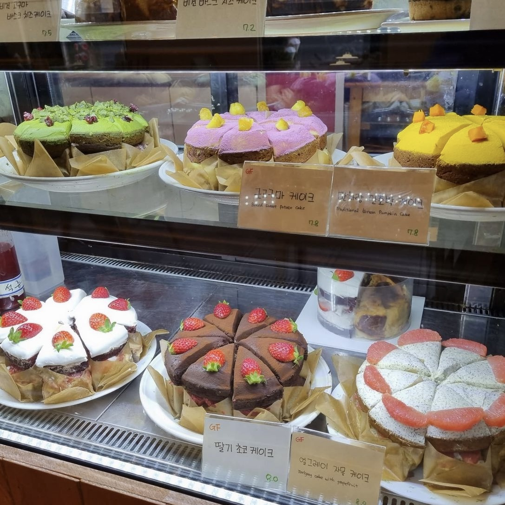

카페·베이커리

- 지구제과
- 
- 주소서울 마포구 성미산로29길 30-3 1층
- 별점 ★ ★ ★ ★ ☆
- 식물성 재료로 빵과 과자를 굽
는 비건 글루텐프리 제과점 지구제과입니다.
- 대표메뉴

- 

- 빵어니스타
- 
- 주소서울 용산구 보광로55길 3 1층, 2층
- 별점 ★ ★ ★ ★ ☆
- 내가 먹을 수 있는 좋은 재료와
정성으로 만듭니다. 비건, NO밀가루, NO사탕수수설탕, NO유제 품, NO달걀
- 라페름
- 
- 주소서울 용산구 이태원로54길 32 2층
- 별점 ★ ★ ★ ★ ☆
- 맛있는 비건식 브런치, 다양한
샐러드, 건강스무디가 있는 브런치카페 입니다.
- 앞의로의빵집
- 
- 주소서울 종로구 삼일대로32가길 29-1
- 별점 ★ ★ ★ ★ ☆
- 건강한 신념을 가지고 만드는
비건빵이 가득한 앞으로의 빵집입니다..